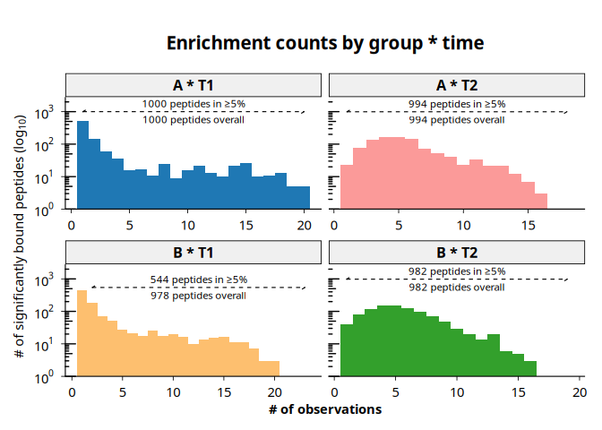
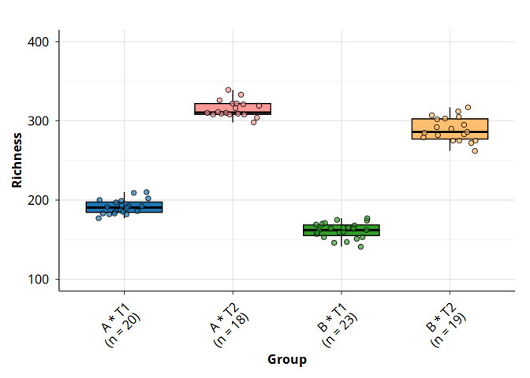

The phiper package provides a scalable, reproducible toolkit for validating and analyzing PhIP-Seq data in cross-sectional and longitudinal studies.
Installation
You can install the development version of phiper from GitHub with either pak or devtools:
# install.packages("pak")
pak::pak("Polymerase3/phiper")
# or, using devtools:
# install.packages("devtools")
devtools::install_github("Polymerase3/phiper")Usage
For testing, exploration, and minimal examples we provide the phip_mixture dataset. It is a simulated PhIP-Seq–like antibody repertoire for two groups (A, B) and two time points (T1, T2), with per-subject, per-peptide presence/absence (exist) plus corresponding read counts and fold changes. The dataset is generated from a simple mixture of rare and common peptide prevalences with Poisson-distributed counts and is intended solely for testing and illustrative examples, without any biological interpretation.
Importing the data
A ready-to-use example dataset is bundled with phiperio. Load it directly with:
You can inspect the data:
ps$data_long %>%
head(5) %>%
collect()
#> # A tibble: 5 × 9
#> sample_id subject_id group time peptide_id exist counts_control counts_hits
#> <chr> <chr> <chr> <chr> <chr> <int> <int> <int>
#> 1 A_T1_1 1 A T1 10003 1 5 1031
#> 2 A_T1_1 1 A T1 10017 1 37 494
#> 3 A_T1_1 1 A T1 10023 1 11 3015
#> 4 A_T1_1 1 A T1 10062 1 0 3499
#> 5 B_T1_1 1 B T1 10087 1 1 1245
#> # ℹ 1 more variable: fold_change <dbl>You can also inspect the current version of the peptide library maintained by the Vogl lab:
get_peptide_library(ps) %>%
head(5) %>%
collect()
#> # A tibble: 5 × 30
#> peptide_id aa_seq pos len_seq Fullname Description is_IEDB_or_cntrl is_auto
#> <chr> <chr> <dbl> <dbl> <chr> <chr> <lgl> <lgl>
#> 1 agilent_1 AAAAAA… 2728 2997 Chromod… Chromodoma… TRUE TRUE
#> 2 agilent_2 AAAAYA… 88 445 integra… Uncharacte… TRUE FALSE
#> 3 agilent_3 AAADRS… 264 548 hypothe… Possible c… TRUE FALSE
#> 4 agilent_4 AAAIAW… 1276 3432 envelop… Genome pol… TRUE FALSE
#> 5 agilent_5 AAALRK… 1188 1935 Myosin-… Myosin-7 TRUE FALSE
#> # ℹ 22 more variables: is_infect <lgl>, is_EBV <lgl>, is_toxin <lgl>,
#> # is_PNP <lgl>, is_EM <lgl>, is_MPA <lgl>, is_patho <lgl>, is_probio <lgl>,
#> # is_IgA <lgl>, is_flagellum <lgl>, signalp6_slow <lgl>,
#> # is_topgraph_new <lgl>, is_allergens <lgl>, domain <chr>, kingdom <chr>,
#> # phylum <chr>, class <chr>, order <chr>, family <chr>, genus <chr>,
#> # species <chr>, common <chr>Plotting peptide counts
You can easily plot peptide counts using the plot_enrichment_counts() function:
plot_enrichment_counts(
ps,
group_cols = c("group", "time"),
group_interaction = TRUE,
interaction_only = TRUE,
annotation_size = 3
)
#> [15:47:57] INFO Plotting enrichment counts (<phip_data>)
#> -> group_cols: 'group', 'time'
#> [15:47:57] INFO building enrichment count plot
#> -> grouping variable: '..phip_interaction..'
#> [15:47:57] OK plot built
#> [15:47:57] OK building enrichment count plot - done
#> -> elapsed: 0.151s
#> [15:47:57] OK Plotting enrichment counts (<phip_data>) - done
#> -> elapsed: 0.155s
Alpha diversity
You can also compute and visualize alpha diversity for different groups or subgroups of interest. phiper is organized into analysis modules: for each module you typically get a computation function (for example, compute_alpha()) and one or more plotting functions (for example, plot_alpha()). This pattern repeats across the analysis modules.
For alpha diversity specifically:
alpha <- compute_alpha(
ps,
group_cols = c("group", "time"),
carry_cols = "subject_id",
group_interaction = TRUE,
interaction_only = TRUE
)
#> [15:47:58] INFO Peptide library attached on main connection
#> - available columns: peptide_id, aa_seq, pos, len_seq,
#> Fullname, Description, is_IEDB_or_cntrl, is_auto …(+22)
#> [15:47:58] INFO Computing alpha diversity (<phip_data>)
#> -> group_cols: 'group', 'time'; ranks: 'peptide_id'
#> [15:47:58] OK Computing alpha diversity (<phip_data>) - done
#> -> elapsed: 0.116s
head(alpha)
#> $`group * time`
#> # A tibble: 80 × 7
#> rank sample_id phip_interaction subject_id richness simpson_diversity
#> <chr> <chr> <chr> <chr> <int> <dbl>
#> 1 peptide_id B_T1_13 B * T1 13 141 0.993
#> 2 peptide_id A_T2_13 A * T2 13 333 0.997
#> 3 peptide_id B_T2_13 B * T2 13 282 0.996
#> 4 peptide_id B_T2_22 B * T2 22 317 0.997
#> 5 peptide_id B_T2_23 B * T2 23 303 0.997
#> 6 peptide_id B_T1_3 B * T1 3 174 0.994
#> 7 peptide_id B_T2_5 B * T2 5 283 0.996
#> 8 peptide_id A_T1_6 A * T1 6 187 0.995
#> 9 peptide_id B_T1_7 B * T1 7 169 0.994
#> 10 peptide_id A_T2_8 A * T2 8 310 0.997
#> # ℹ 70 more rows
#> # ℹ 1 more variable: shannon_diversity <dbl>You can then plot the results:
plot_alpha(
alpha,
metric = "richness",
group_col = "phip_interaction"
) +
ylim(100, 400) +
theme(
axis.text.x = element_text(
angle = 45,
vjust = 1,
hjust = 1
)
)
#> [15:47:58] INFO plotting alpha diversity (precomputed)
#> -> metric: richness
#> [15:47:58] OK plotting alpha diversity (precomputed) - done
#> -> elapsed: 0.073s
Contributing
Bug reports, feature requests, and questions are welcome. Please open an issue on the GitHub tracker:
If you’d like to contribute, please read CONTRIBUTING.md.